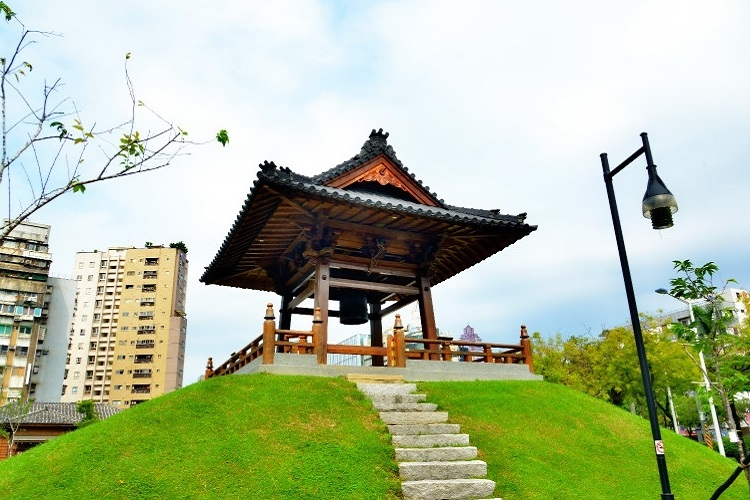

西門站

西門紅樓
西門紅樓，在臺灣日治時期俗稱八角堂，緊鄰西門町徒步區。 建築為兩層高的直轄市定古跡紅磚洋樓，其外觀為每正立面8米，1908年所建。 今為臺北市著名的文創藝文場所、展演空間。 八角堂主建築體後面連接著的是十字型外觀的一樓磚造樓房，而結構不太相似的這兩棟建物合稱西門市場，紅樓則為市場入口。
戰後，接收八角堂的滬商業者因建築的紅磚外觀，改名為"紅樓劇場"。 1963年後，紅樓劇場改映電影，因此又被稱為"紅樓戲院"或簡稱"紅樓"。 1997年，中華民國內政部將紅樓列為三級古跡，定名為西門紅樓。
開放時間:全館週一休館。
八角樓：週日至週四11:00-21:30，週五、週六延長至22:00。十字樓：週二至週四14:00-21:30，週五14:00-22:00，週六11:00-22:00，週日11:00-21:30。
地址：台北市萬華區成都路10號。

西本願寺
西本願寺是臺灣日治時期建於臺北市新起町的淨土真宗本願寺派佛寺，過去正式名稱為淨土真宗本願寺派臺灣別院。戰後，西本願寺部分建築為理教、軍方、警備總部第二處等單位使用，二二八事件后王育霖、辜振甫等政治犯曾被囚禁於此。 建築旁邊則有聯勤被服廠、反共救國軍及大陳島撤退的軍民居住，帶有濃厚眷村色彩，曾成為軍隊傷兵收容所、樂團與宗教團體等短期進駐使用的空間。 此時期日本佛寺功能消失，中華新村和理教公所出現，但因為消費者組成複雜、出入流動頻繁，以及搭建臨時住宅、未有維護保存意識導致西本願寺建築保存環境不良，甚至引發火災燒毀部分建築，如本堂等大部分建築即於1975年焚毀。
交通:搭乘捷運板南線至西門捷運站1號出口，步行3~5分鐘即可抵達。開放時間:樹心會館，周二〜周日10:00-17:00。本堂，周一〜周五09:00-17:00。廣場，全天。
地址：臺北市萬華區中華路1段174-176號。